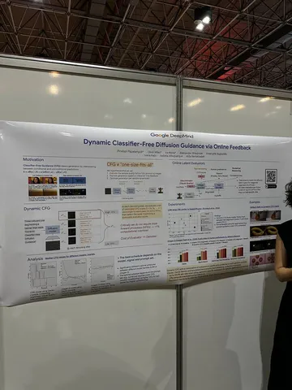
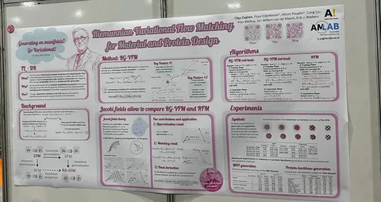
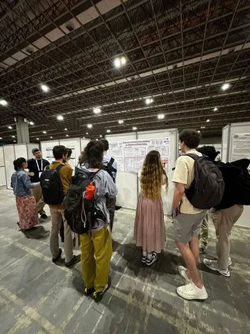
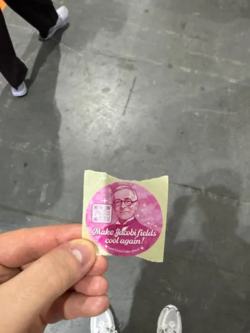

О том, как стартовала конференция, рассказали в канале @MLunderhood. А прямо сейчас исследователь Yandex Research Сергей Кастрюлин делится работой об адаптивном гайдансе без использования классификатора в диффузионках.
Dynamic Classifier-Free Diffusion Guidance via Online Feedback
После обучения диффузионной модели стандартный шаг её подготовки к использованию — это подбор параметров инференса. Например, подбор CFG scale и паттерна распределения CFG в случае с динамическим гайденсом.
Авторы из Google DeepMind предлагают метод для более эффективной настройки параметров инференса. Вместо beam search или ещё более дорогого полного перебора предлагается дообучить версии классификаторов качества (например, CLIP score) для работы с зашумлёнными латентами — и с помощью них динамически выбирать параметры сэмплирования прямо в процессе инференса.
Основной посыл в том, что один раз получить файньюны классификаторов дешевле, чем делать перебор параметров инференса, особенно если делать такое несколько раз.
И в заключение лайфхак, подсмотренный на постерной сессии:
Если научный руководитель просит не оформлять постер в стиле Барби (фото 2), знайте — он ничего не понимает в дизайне, народу зайдёт (фото 3).
#YaICLR26
CV Time



